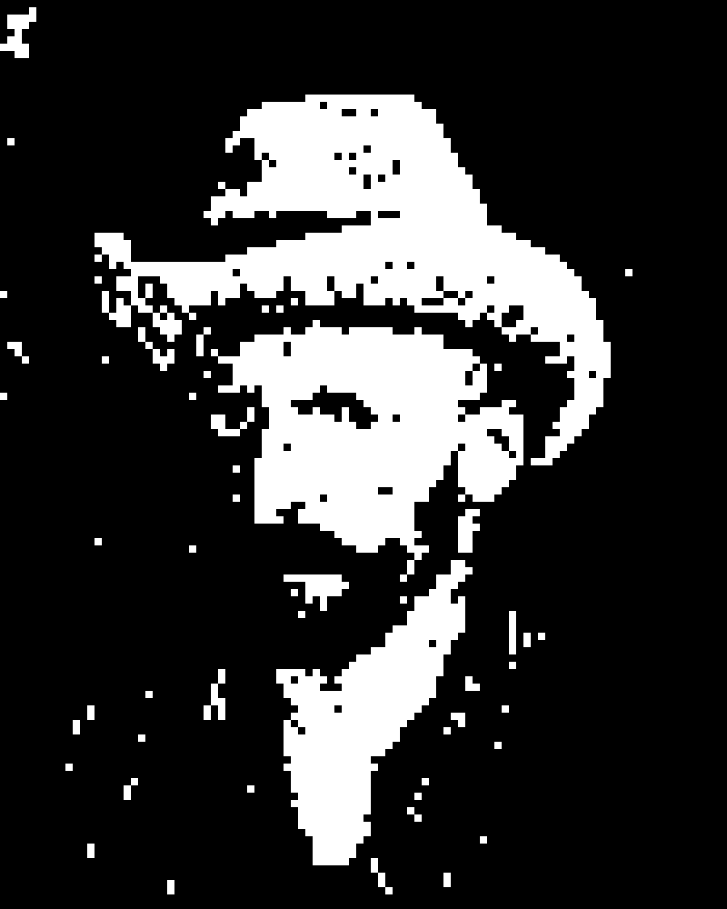
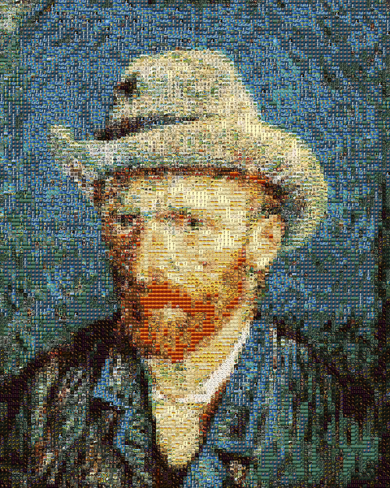

《梵谷六重奏》
Photomosaic — 資料量與視覺還原度的實驗
原圖 · 梵谷自畫像

實驗 1 · 2 色像素

實驗 4 · 梵谷圖庫
實驗 6 · 16,145 幅名畫
EXP 01
2-Color Pixel
純色方塊
2 tiles
EXP 02
7-Color Pixel
純色方塊
7 tiles
EXP 03
24-Color Pixel
純色方塊
24 tiles
EXP 04
Van Gogh 877
梵谷單一畫家
~877 tiles
EXP 05
Polygon 10,000
幾何多邊形
10,000 tiles
EXP 06
Masterpiece 16,145
世界名畫全集
16,145 tiles
實驗 1 — 2 色純色像素
以黑白兩色方塊拼合，呈現最低資料量的像素化還原